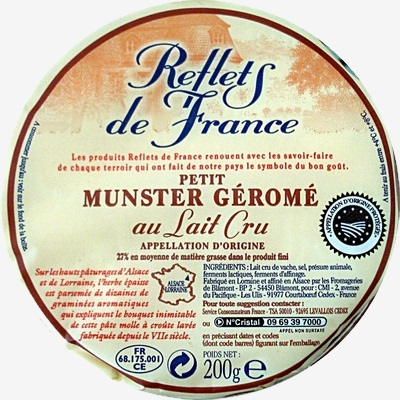

Eeat less sugar,
you're sweet enough already
cs_team_beta_hw2 - Automn 2018

cs_team_beta_hw2 - Automn 2018

Top 10 Creators

So far we can see that Kiliweb is the most active contributors and is continously adding products. usda-ndb-import, which is the 'United States Department of Agriculture' seems to not contrinbute anymore to the open food facts database and has been only imported once. The open community of openfoodfacts-contributors seems to be growing day after day. We could almost consider individual contributor as marginal.

The diversity of contributors may lead to mismatched data. We can already assume, based of the main contributors, that the diversity of product by country is not representative and comparison against country is most probably not relevant enough.
Top 10 Brands
32% of the products are not assigned to any Brands. Furthermore the 6 most big brands of Open Food Facts are French Mall. This sounds strange that main of the products are repertoried in France.
|  |
French cheese only could not explain this delta ?
Product Code '3245390058782' Petit Munster Géromé It's true that there is a lot of cheese in France and that some of them are realy famous ! Should we perform some deep analysis in this area !? |
Most likely, It seems that as described above with contributors, that the french community, through kiliweb, is the most important contributor.
This may explain why there is so much products assigned to French Brand or assigned to France. (unlikely not related to cheese)
Top 10 Largest Countries

We discover here the same behavior than previous analyis. Most of the products are assigned to France which was the expectation as the main contributor is kiliweb (France Web Agency). This is consistent, especially after the analysis of the contributors and brands above.
Even if most of the products have been assigned to country, as only 544 products are not linked to any country, we discover that there is 1361 countries.
So far it seems that countries contain a list of countries and not unique country.
Furthermore most of the products are linked to one or two countries only, which is very suspicious.

|
We could assume per example that this peanut butter http://world-en.openfoodfacts.org/product/0011110739322/peanut-butter-creamy assigned to France could be founded in another country like USA as it is made by Kroger https://fr.wikipedia.org/wiki/Kroger.
Most probably this product is being sold in France and had been repertoried as French's product. But we could be sure that this peanut butter is sold in USA too, maybe in a different product's name. |
So far we can conclude that this field country has to be used with precaution.
Top 10 Largest Categories
It seems that 74% of the Products does not have any 'category'. Furthermore the first and second categories contain both 'Beverages'.
All Brands per Company

Furthermore, we tried to regroup Brands logically, as main of them are owned by the same Company. So we decided to enrich the data with Company And Brands by following informations from the schema above:
To get those infromation, we implemented, with beautiful soup an interface to Wikipedia:
Play with Data in Tableau

Data have been exported from Jupyter Notebook to CSV files and loaded to Tableau.
 Move back to Data Cleaning
Move back to Data Cleaning